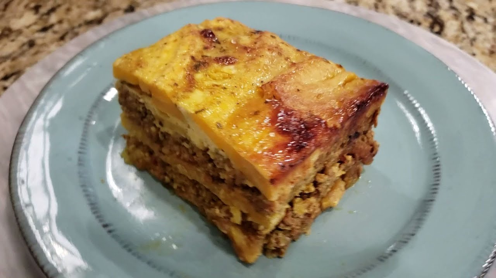

Pinon Recipe

Description
This is a recipe for a classic Puerto Rican dish: Pinon!
Ingredients:
For the meat layer:
- 1 pound ground beef (or ground pork)
- 1 small onion, chopped
- 1 bell pepper, chopped
- 2 cloves garlic, minced
- 1/2 cup tomato sauce
- 1 teaspoon Adobo seasoning (or to taste)
- 1 teaspoon oregano
- 1/2 teaspoon cumin
- Salt and pepper to taste
- 1/4 cup olives, chopped (optional)
- 1/4 cup raisins (optional)
For the plantain layer:
- 3-4 ripe plantains (yellow with black spots)
- 1/2 cup cheese (such as mozzarella or cheddar), shredded (optional)
- 1/4 cup milk (optional, for creaminess)
- Salt to taste
- Oil for frying (if frying the plantains)
Steps:
Prepare the Plantains;
-
1: Peel the ripe plantains and cut them into 1-inch pieces.
2: In a large pot, bring water to a boil and add the plantain pieces. Cook for about 10-15 minutes until they are tender.
3: Drain the plantains and mash them in a bowl. You can add a little milk and salt for creaminess if desired.
Make the meat filling:
-
1: In a large skillet, heat a little oil over medium heat. Add the chopped onion, bell pepper, and minced garlic. Sauté until the vegetables are soft.
2: Add the ground beef (or pork) to the skillet. Cook until browned, breaking it apart with a spoon.
3: Stir in the tomato sauce, adobo seasoning, oregano, cumin, salt, and pepper.
If using, add the chopped olives and raisins. Simmer for about 5-10 minutes until the flavors meld.
Assemble the Pinon:
-
1: Preheat your oven to 350°F (175°C).
2: In a greased baking dish, spread half of the mashed plantains evenly on the bottom.
3: Layer the meat filling over the plantains.
4: Top the meat with the remaining mashed plantains, spreading it evenly. If desired, sprinkle shredded cheese on top.
Baking:
-
Place the baking dish in the preheated oven and bake for about 25-30 minutes, or until the top is golden and slightly crispy.
Serving:
-
1: Remove from the oven and let it cool for a few minutes. Cut into squares and serve warm. Garnish with fresh cilantro or parsley if desired.